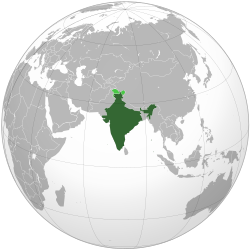
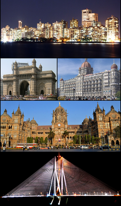

About India
India, Officially the Republic of India , is a country in South Asia. It is the Seventh-largest Country by area, the Second Most Populous country (with over 1.2 Billion People ), and the most populous democracy in the world. It is bounded by the Indian Ocean on the South, the Arabian Sea on the Southwest, and the Bay of Bengal on the Southeast. It shares land borders with Pakistan on the west, China, Nepal & Bhutan to the Northeast, and Myanmar (Burma) & Bangladesh to the east. In the Indian Ocean, India is the vicinity of Sri Lanka & Maldives . India's Andaman & Nicobar Islands shares a maritime border with Thailand & Indonesia .
In the following millennium, the oldest scriptures associated with Hinduism began to be composed. Large Scale urbanization occured on the Ganges in the first millennium BCE Leading to the Mahajanapada , and Buddhism and Jainism arose. Early Political Consolidations took place under the Maurya and Gupta Empires . In the medieval era, Judaism, Zoroastrianism, Christianity & Islam arrived and Sikhism emerged, all adding to the region's diverse culture. The country was unified in the 17th Century by the Mughal Empire . In the 18th Century, the subcontinent came under the Maratha Empire and in the 19th under the British East India Company , later shifting to British Crown Rule . A nationalist movement emerged in the late 19th Centry, which later, under Mahatma Gandhi , was noted for nonviolent resistance and led to India's independence in 1947.
Ancient India
The earliest authenticated human remains in South Asia date to about 30,000 years ago. Nearly contemporaneous Mesolithic rock art sites have been found in many parts of the Indian subcontinent, including at the Bhimbetka rock shelter in Madhya Pradesh. Around 700 BCE, one of the first known Neothilic settlements appeared on the subontinent in Mehrgarh & other sites in the subcontinent. These gradually developed into the Indus Valley Cililisation, the first urban culture in South Asia; it flourished during 2500 - 1900 BCE in north Afghanistan to Pakistan & Northwest India. Centred around cities such as Mohenjo Daro, Harappa, Dholavira, & Kalibangan, and relying on varied forms of subsistence, the civiliation engaged robustly in crafts production & wide-ranging trade.

Mumbai

Top to Bottom
- Cuffe Parade,
- the Gateway of India (Left),
- Taj Mahal Palace Hotel (Right),
- Chhatrapati Shivaji Maharaj Terminus,
- and the last one Bandra - Worli Sea Link.
Mumbai (also known as Bombay, the Official Name until 1995) is the capital city of the Indian State of Maharashtra, It is the most populous city in India with an estimated city proper population of 12.4 million as of 2011. Along with neighbouring regions of the Mumbai Metropolitan Region, it is the second most populous metropolitan area in India, with a Population of 21.3 million as of 2016. Mumbai lies on the Konkan coast on the west coast of India and has a deep natural harbour.
In 2008, Mumbai was named an alpha world city. It is also the wealthiest city in India, and has the highest number of millionaires and billionaries among all the cities in India.
Mumbai is the Financial, Commercial & Entertainment Capital of India. It is also one of the World's Top Ten Centres of Commerce in terms of global financial flow, generating 6.16% of India's GDP and Accounting for 25% of Industrial output, 70% of maritime trade in India (Mumbai Port Trust & JNPT), and 70% of Capital Transcation to India's economy. The city house important financial institution such as Reserve Bank of India, the Bombay Stock Exchange, the National Stock Exchange of India, the SEBI, the corporate Headquaters of numerous Indian Companies & Multinational Corporates.